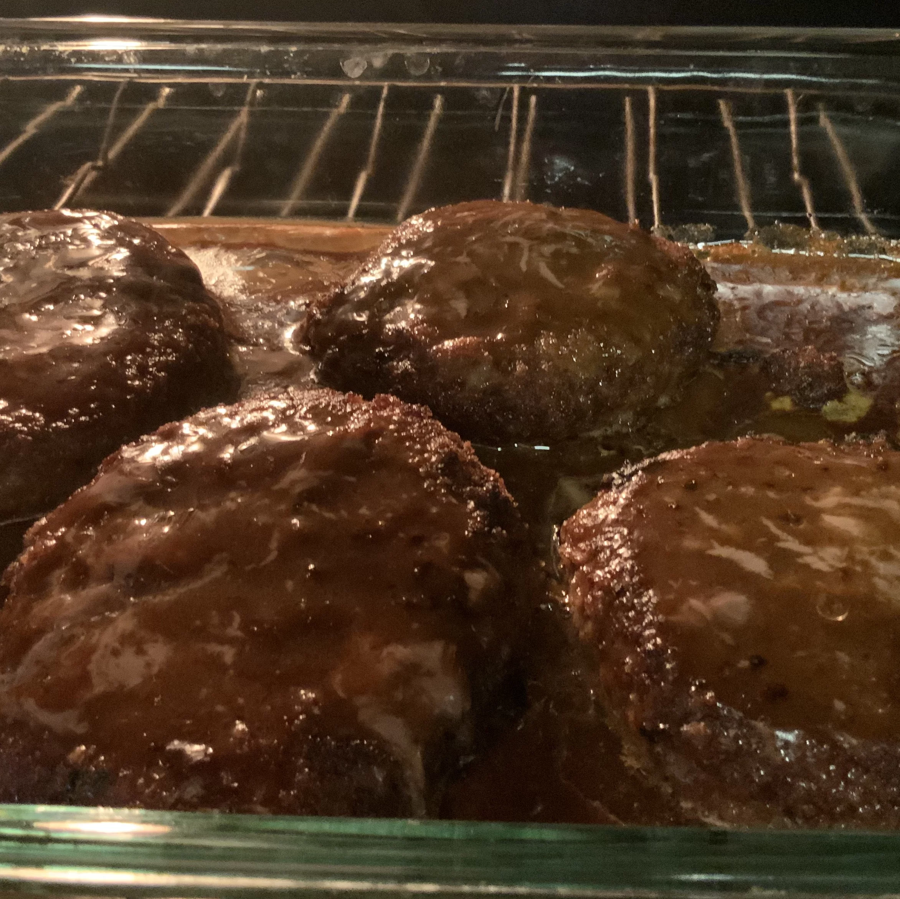

This recipe has been in my family for years. It's easy to cook, but tastes like it took hours to make! I usually make enough extra sauce to pour over mashed potatoes. YUM!
Ingredients
- 1 (10.5 ounce) can condensed French onion soup
- 1 ½ pounds ground beef
- ½ cup dry bread crumbs
- 1 egg
- ¼ teaspoon salt
- ⅛ teaspoon ground black pepper
- 1 tablespoon all-purpose flour
- ¼ cup ketchup
- ¼ cup water
- 1 tablespoon Worcestershire sauce
- ½ teaspoon mustard powder
Steps
- In a large bowl, mix together 1/3 cup condensed French onion soup with ground beef, bread crumbs, egg, salt and black pepper. Shape into 6 oval patties.
- In a large skillet over medium-high heat, brown both sides of patties. Pour off excess fat.
- In a small bowl, blend flour and remaining soup until smooth. Mix in ketchup, water, Worcestershire sauce and mustard powder. Pour over meat in skillet. Cover, and cook for 20 minutes, stirring occasionally.